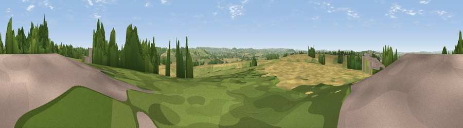

Babylon Hill
#21561 in England · top 47% of its area beats it · near Over ComptonThe view, rendered

A 360° render of this exact spot computed from the terrain model, tree cover and land cover — summer colours, afternoon light, calibrated against photographs of famous viewpoints. Real trees, hedges and buildings will differ in detail.
The panorama
Grey silhouette: terrain skyline in each direction (720 bearings, Earth curvature and refraction included). Dashed green: skyline with trees (+15 m) and buildings (+8 m) as obstacles. Blue strip: how far the ground is visible on each bearing.
Where the view opens
Wedge length = distance to the farthest visible ground on that bearing (vegetation-aware). Rings at 10, 25 and 50 km.
What fills the view
41% grassland · 37% woodland · 16% cropland · 6% built-up
Angular shares of the visible panorama (visual magnitude), not map area. Landscape diversity 0.52 (0–1 Shannon).
Key numbers
More beautiful places nearby
The staircase of upgrades: each row has a higher view potential than everything closer. Driving times are estimates from straight-line distance, calibrated against real road routing — check an actual route before setting out.
| Place | Direction | Drive | Score |
|---|---|---|---|
| Viewpoint near Over Compton | W · 1 km | ~3 min | 54.6 |
| Viewpoint near Nether Compton | NE · 2 km | ~6 min | 67.8 |
| Viewpoint near Lillington | SE · 4 km | ~9 min | 68.7 |
| Round Hill | NE · 4 km | ~9 min | 70.4 |
| The Beacon | NNE · 8 km | ~16 min | 75.8 |
| Viewpoint near North Poorton | SSW · 18 km | ~32 min | 77.0 |
| Viewpoint near Hewish | WSW · 20 km | ~34 min | 78.5 |
| Lewesdon Hill | SW · 22 km | ~36 min | 83.3 |
50.94471, -2.57642 · source: dobih hill · position refined by local search. Computed location — check access rights before visiting.